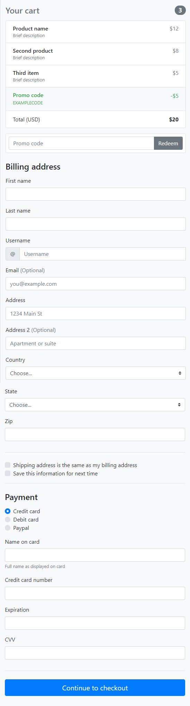
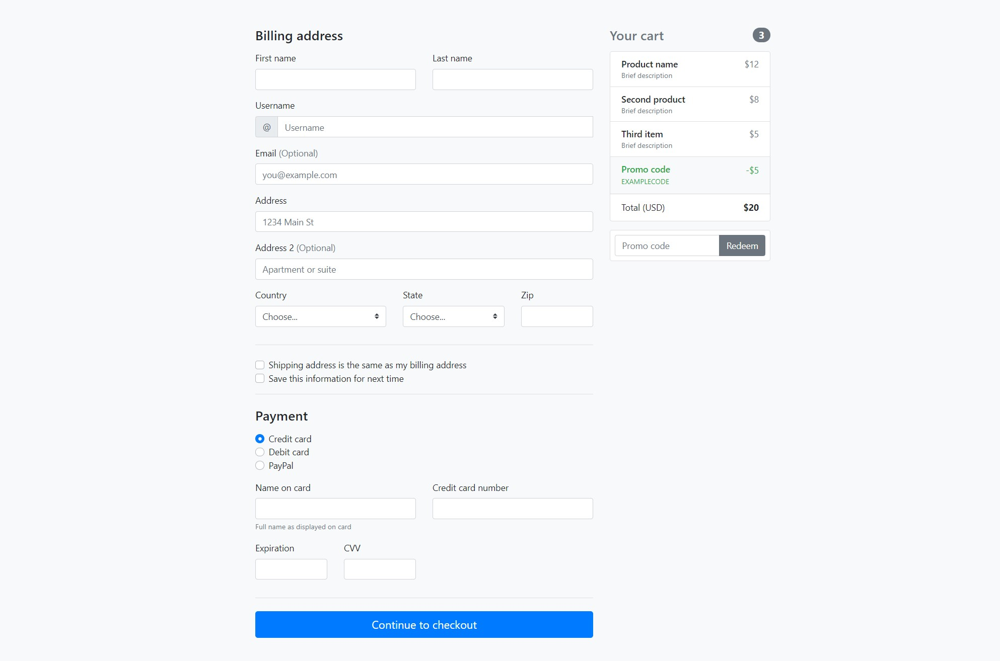

Készítsd el bootstrap segítésével a képen látható formot.
sm töréspontig az elrendezés az alábbiak szerint alakul:

sm töréspont felett pedig:

A state mezőnél elég 5 darab példaországot felvenni.
A designnak nem kell pixelpontosnak lennie!